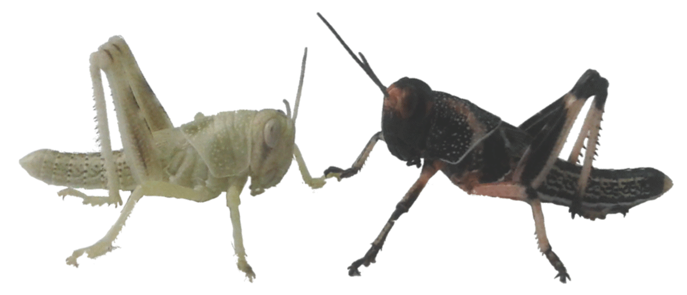

|  Study of phase polyphenism emergence and associated risks |
Credits | This website is the official PEPPER Project's website Identification Site name: The PEPPER project Full URL: https://anrpepper.github.io Publisher AGRICULTURAL RESEARCH CENTRE FOR INTERNATIONAL DEVELOPMENT Cirad is a French public industrial and commercial institution. Chief Executive officer: Mr Michel EDDI Headquarters: 42 rue Scheffer, 75116 Paris, France Email: www@cirad.fr - Phone: +33 (0)1 53 70 20 00 RCS: Paris 331 596 270 Publication director: Mr Michel EDDI Publication manager: Mr Renaud VITALIS Webmaster: Mr Pierre-Emmanuel GAY Hosting company GitHub, Inc. https://github.com - Phone: +1 415 448-6673 Headquarters: 275 Brannan St, San Francisco CA 94107, USA |
| The PEPPER project |
|